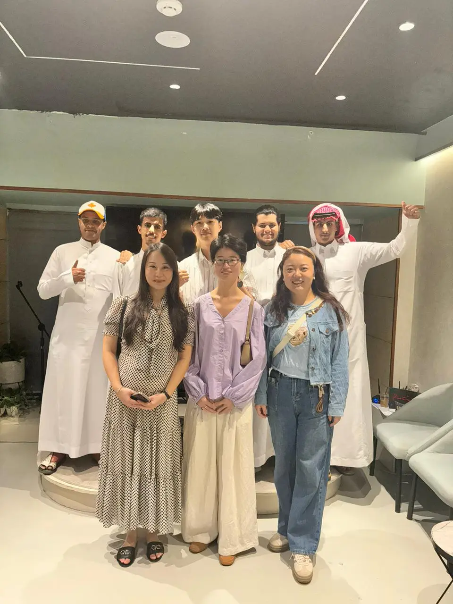
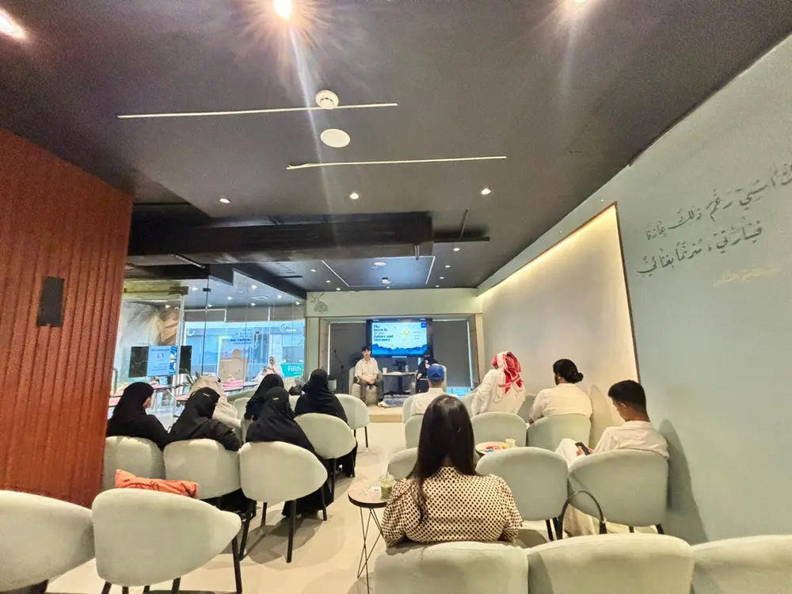

A monthly gathering for literature, storytelling, translation, and identity — from Su Shi's poetry to Lu Xun's prose, mooncakes included. No expertise required. Only curiosity.
Each salon centres on a work of Chinese or Arab literature — read together, interpreted across languages, and discussed over tea. The salon's writing flows straight into the Media Lab, where members publish their reflections and translations.


Policy explains what two regions do; literature explains why. The salon builds the kind of understanding between Chinese and Gulf youth that no briefing paper can — one poem, one story, one argument about a translation at a time.